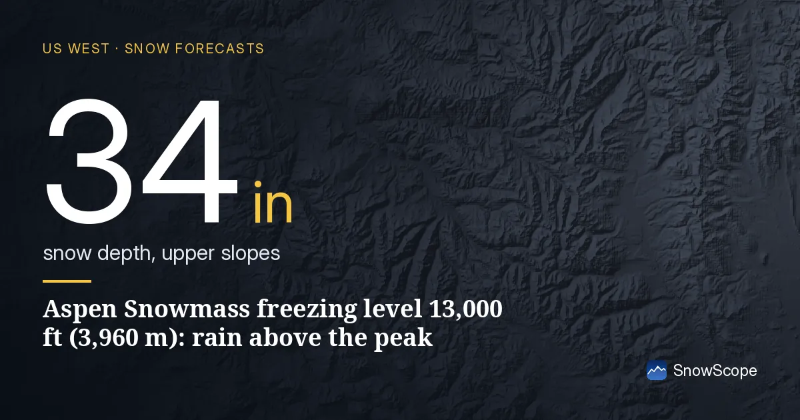
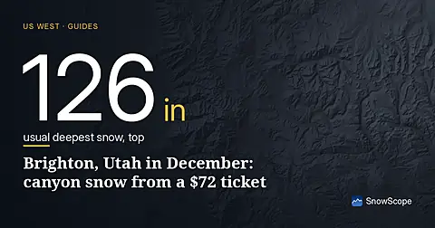

Aspen Snowmass freezing level 13,000 ft (3,960 m): rain above the peak
Aspen Snowmass stands out among western resorts for elevated freeze-level exposure in the coming days. The 0°C level reaches 13,000 ft (3,960 m) by 12 November—well above the peak at 12,500 ft (3,815 m)—and remains high through 13 November as precipitation arrives. This creates a rain-on-snow hazard on a snowpack holding just 14 in (36 cm) on upper slopes.
See the live snow forecast for Aspen Snowmass in the SnowScope appSnow depth, powder alerts and the 3D map, free.
Regional warmth drives freeze level to 13,000 ft (3,960 m)
The 0°C level climbs well above typical early-November values. At Aspen Snowmass specifically, the freezing level fluctuates between 9,150 ft (2,790 m) and 12,900 ft (3,930 m) across the next four days, reaching a peak of 13,000 ft (3,960 m) on 12 November. This elevation exceeds the highest lift-serviced terrain at 12,500 ft (3,815 m). By 14 November, the freeze level has descended to 8,330–10,790 ft (2,540–3,290 m) across the region as the warm air mass retreats. The pattern is marked by both spatial extent (affecting much of Colorado and Utah) and temporal concentration (confined to a narrow 72-hour window).
| Resort | Snow depth | New snow, 72 h | Coming, next days | Top |
|---|---|---|---|---|
| Aspen Snowmass | 14 in (36 cm) | 0 in (0 cm) | 1 in (2 cm) | 12,516 ft (3,815 m) |
| Wolf Creek | 34 in (87 cm) | 0 in (0 cm) | 3 in (8 cm) | 11,762 ft (3,585 m) |
| Big Sky Resort | 19 in (48 cm) | 0 in (0 cm) | 0 in (0 cm) | 11,161 ft (3,402 m) |
| Purgatory Resort | 22 in (57 cm) | 0 in (0 cm) | 5 in (12 cm) | 10,797 ft (3,291 m) |
| Brighton Resort | 18 in (46 cm) | 0 in (0 cm) | 4 in (10 cm) | 10,449 ft (3,185 m) |

Rain-on-snow risk emerges across the high country
Aspen is not alone in this exposure. Purgatory Resort (peak 10,790 ft / 3,291 m) faces rain-on-snow risk on both 13 and 14 November as the snow line climbs above the summit to 10,820 ft (3,300 m) on 13 November. Brighton Resort (peak 10,450 ft / 3,185 m) is exposed on 13 November with the snow line reaching 10,500 ft (3,200 m). Big Sky Resort (peak 11,160 ft / 3,402 m) sees similar conditions on 13 November as the snow line reaches 11,150 ft (3,400 m). The regional pattern reflects a broad warm-air surge from the south. When such features synchronize across multiple resorts, they signal a significant shift in the atmospheric circulation. For the moment, however, the effect is concentrated; by mid-day on 14 November the pattern begins to stabilize as colder air moves in.
Where precipitation transitions from rain to snow
The snow line—the elevation where precipitation shifts from rain to snow—lies approximately 1,000 ft (300 m) below the freeze level. At Aspen on 13 November, this means rain falls above roughly 11,800 ft (3,600 m) while lower elevations receive snow. The exact location of this boundary can vary depending on humidity levels and precipitation efficiency. Geographic patterns differ significantly across the region. At Palisades Tahoe (9,000 ft / 2,750 m elevation), all 23 mm of forecast precipitation on 13 November falls as snow because the base sits well below the freeze level. At Mt. Baker (5,050 ft / 1,540 m), by contrast, only 40% arrives as snow; the base is immersed in warm air, so most precipitation falls as rain. This gradient explains why early-season rain-on-snow risk is not uniform: high, north-facing terrain is relatively sheltered; low, south-facing terrain in the warm layer is most exposed.
Thin snow amplifies the rain hazard
Early-season snow depth remains thin across the region. Aspen Snowmass holds 14 in (36 cm) on upper slopes—close to the five-year early-November average of 10 in (26 cm) at this site, but still shallow. When rain penetrates snow thinner than typical base depths, the consequences include rapid runoff, weakened bonds between layers, and exposure of buried rocks and hazards. The risk of slush flows and wet-slab avalanches increases substantially when rain falls on a marginal snowpack. The hazard concentrates on south-facing slopes that receive direct solar heating during the warmest hours of the day, when surface temperatures climb most rapidly. Consult the official avalanche forecast for your area before entering steep terrain on 13 and 14 November.
When does the pattern shift?
The warm pulse is transient. By 14 November the freeze level has retreated to 8,330–10,790 ft (2,540–3,290 m) across the region, returning precipitation to snow at high elevations. After that, cold air becomes established and moisture depletes. The sequence epitomizes an early-season dynamic: a narrow warm surge, followed by colder air, followed by stability. The net effect favors snow accumulation. On 11 November, 123 resorts reported snow cover across the region; by 14 November the total reaches 139. The growth is meaningful, though the starting point remains relatively low by November standards.
Tips for skiers
- At Aspen, Purgatory, and Brighton, avoid south-facing upper slopes above 11,800 ft (3,600 m) on 13 November; seek north-facing terrain and lower elevations where the snowpack is deeper and more robust.
- Check the official avalanche bulletin from the Colorado Avalanche Information Center or your regional authority for updated guidance on 13 and 14 November; conditions warrant daily reassessment, not a single forecast.
- At Mt. Baker and other Cascade resorts, rain will dominate elevations below 6,070 ft (1,850 m); look for protected, north-facing slopes above that threshold where snow is more stable.
- If you observe slush or percolating water within the snowpack, leave steep terrain at once and descend to low angles; thin snow means that infiltrating water poses a direct threat to slope stability.
- By 14 November the freeze level retreats and conditions stabilize; the critical window is 12–13 November. Plan your trips accordingly.
About these numbers
Resort snow depths are the deepest snow on the resort's upper slopes on the date shown; they are estimates for an area, not a measurement at one point. Forecasts can change. Always read the official avalanche bulletin before going off-piste.
Official avalanche bulletins: avalanche.org
Cite this report
For research, teaching or the press: the numbers and charts are free to reuse under CC BY 4.0 with this citation.
SnowScope (2026), Aspen Snowmass freezing level 13,000 ft (3,960 m): rain above the peak, https://snowscope.app/blog/en/2026/11/us-west-freezing-level-snow-line-11-november-2026.html, accessed 2026-11-11
SnowScope (Atlas Labs). (2026, November 11). Aspen Snowmass freezing level 13,000 ft (3,960 m): rain above the peak. SnowScope snow reports. https://snowscope.app/blog/en/2026/11/us-west-freezing-level-snow-line-11-november-2026.html
BibTeX
@misc{snowscope2026uswestfreezinglevelsnowl,
author = {{SnowScope (Atlas Labs)}},
title = {Aspen Snowmass freezing level 13,000 ft (3,960 m): rain above the peak},
year = {2026},
month = nov,
howpublished = {\url{https://snowscope.app/blog/en/2026/11/us-west-freezing-level-snow-line-11-november-2026.html}},
note = {Published 2026-11-11 18:44 UTC; accessed 2026-11-11}
}· CC BY 4.0 · Methods, data and tools →
Aspen Snowmass: snow and temperature by height, this winter vs last (tools) →
Follow Aspen Snowmass
Free: a message when fresh snow is coming, and the forecast every morning.
More snow reports

Brighton's mid-mountain typically holds 37 in (94 cm) on 15 December. Data as of 13 November 2026.

A storm on November 4 left 8 to 13 inches of new snow at five high Colorado stations near Aspen. Five days later, half of it was gone. What that means for powder days.

Wolf Creek holds 34 in (87 cm) at mid-mountain on a typical 15 December. Peak prices start 20 December. Data: 13 November 2026.